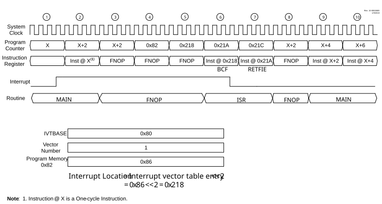
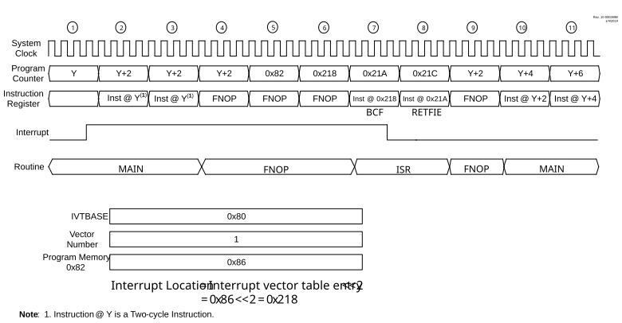
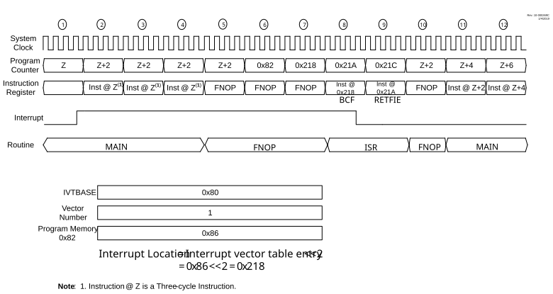

When MVECEN = 1, there is a fixed latency of three instruction cycles
between the completion of the instruction active when the interrupt occurred and the
first instruction of the Interrupt Service Routine. Figure 11-7, Figure 11-8 and Figure 11-9 illustrate the sequence of events when a
peripheral interrupt is asserted, when the last executed instruction is one-cycle,
two-cycle and three-cycle, respectively.
After the Interrupt Flag Status bit is set, the current instruction completes executing.
In the first latency cycle, the contents of the PC, STATUS, WREG, BSR, FSR0/1/2, PRODL/H
and PCLATH/U registers are context saved, and the IVTBASE + Vector number is calculated.
In the second latency cycle, the PC is loaded with the calculated vector table address
for the interrupt source, and the starting address of the ISR is fetched. In the third
latency cycle, the PC is loaded with the ISR address. All the latency cycles are
executed as NOP instructions.
When MVECEN = 0, the interrupt controller requires two clock cycles to
vector to the ISR from the main routine. Note that, as this mode requires additional
software to determine which interrupt source caused the interrupt, the actual latency
between the trigger and the beginning of the specific ISR for each individual interrupt
will be longer than two clock cycles and will vary, when not using vectored
interrupts.


